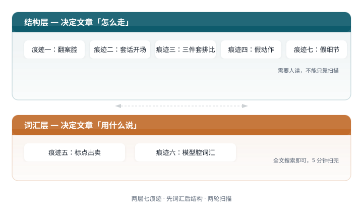

去 AI 味
AI味的七种痕迹
AI 味不是玄学。它有具体的痕迹，每一种都能定位、能命名、能改。
AI 味是什么
读一段 AI 生成的中文，你经常能感觉到"这是 AI 写的"。这种感觉不是模糊的直觉。它来自一些反复出现的模式——句式、用词、标点、结构。这些模式合在一起，构成了我们说的"AI 味"。
把它们拆开看，AI 味分两层。
上层是结构层。句式模板、论证套路、段落节奏——这些东西决定了文章"怎么走"。AI 的文章喜欢先立一个假靶子再打倒它，喜欢三段排比收束，喜欢每段开头用转折词。这些不是某个词的问题，是整个论证骨架的问题。
下层是词汇层。禁用词、禁用标点、禁用修辞——这些东西决定了文章"用什么说"。AI 喜欢"说白了"、"意味着"、"本质上"。喜欢破折号，喜欢提示性冒号，喜欢把抽象名词当人来写。这些是具体的词和符号，扫一遍就能抓出来。
两层的问题不一样，修法也不一样。结构层的问题要动骨架——调整段落顺序、砍掉假论证、换一种推进方式。词汇层的问题用扫描就能解决——找到禁用词，替换成日常说法。
下面七种痕迹，覆盖了结构层和词汇层最常见的 AI 味来源。每一种都给出了识别方法和修改方向。

痕迹一：翻案腔
翻案腔是 AI 中文写作里最刺眼的痕迹。它长这样：先给读者立一个他并没有的误解，再推翻它以抬高下文。
经典句式：
- "不是……而是……"
- "很多人以为……其实……"
- "表面上……实际上……"
- "与其说……不如说……"
- "真正重要的是……"
- "说到底……"
AI 把这些句式当成了论证的默认动作。不管上文有没有树靶子，它都要先否定一个不存在的东西，再亮出自己的观点。
一个例子：
AI 写作的核心不是技术问题，而是信任问题。很多人以为 AI 味来自词汇选择，其实它来自更深层的论证结构。表面上我们是在改词，实际上我们是在重建作者与读者之间的信任关系。
三句话，三次翻案。读者还没看到任何正面内容，已经被否定了三次。改法很简单：直接说正面的。
AI 写作的问题是信任问题。AI 味来自论证结构，不是词汇选择。改掉那些套话句式，读者才会觉得对面是一个具体的人在说话。
翻案腔的检测最容易：在正文里搜索"不是"、"而是"、"其实"、"实际上"、"真正"。如果它们出现在论证位置而不是事实陈述位置，就是翻案腔。
痕迹二：套话开场
AI 的开头有一套固定的库存。它不会从一个具体场景切入，而是从时代背景、技术趋势、宏大叙事起笔。
典型库存：
- "在当今 AI 快速发展的时代……"
- "随着技术的不断进步……"
- "近年来，……越来越受到关注"
- "值得注意的是……"
- "让我们来看看……"
这些开头的共同问题：它们没有提供任何具体信息。读完第一段，你不知道这篇文章要讲什么、为什么现在讲、作者为什么有资格讲。
卡兹克的 skill 里列了四种替代开头：叙事启动（"故事是这样的"）、荒诞事实（直接抛一个让人意外的数据或事实）、热点破题（"最近这两天，被一个三宫格 AI 图片刷屏了"）、好奇心驱动（"这两天在网上刷到一张图，很有意思"）。
共同点是：它们都从一个具体的东西开始。一个事件、一个数字、一张图、一句话。不是从一个概念开始。
痕迹三：三件套排比
AI 喜欢三。三个原因、三个阶段、三个维度、三个关键。原因不是三这个数字有什么魔力，而是 AI 的训练数据里充满了"第一……第二……第三……"的结构。
两种常见的排比模式：
显性排比——"第一……第二……第三……"、"一方面……另一方面……与此同时……"、"既要……又要……还要……"。这种一眼就能认出来。
隐性排比——"为什么出发，为什么放弃，爱过什么，怕过什么"。没有数字编号，但节奏整齐划一，三项同构。这种更隐蔽，但同样暴露 AI 味。
stop-slop 的规则是：两项并列可以，三项及以上排比拆掉。第三项必须换一种说法，或者删掉。human-writing 的规定更严：两项为限。
改法：如果确实需要列举多个点，用自然段落叙述，每段推进一个新的角度，而不是用排比句式把三个点叠在一起。
痕迹四：假动作
假动作是 stop-slop 里"false agency"的中文对应。AI 喜欢让抽象概念做人的动作，因为这样写起来最省事——不需要指明具体是谁做了什么。
典型假动作：
- "数据告诉我们……"——数据不会说话，是你从数据里读出了一个结论
- "市场做出了选择"——市场不会选择，是买家付了钱
- "这个决策带来了……"——决策不会带来东西，是执行决策的人改变了什么
- "文化在转变"——文化不会自己转变，是人们的行为变了
中文 AI 写作里还有一种特有的假动作：用"这件事"、"这个东西"来逃避具体命名。
它把写中国专利交底书这件事拆成了流水线，从读代码到出 Word，全流程自动化。
"这件事"三个字暴露了作者没有真正理解自己在写什么。改法：删掉"这件事"，让动词直接接宾语。
它把专利交底书的撰写拆成了流水线，从读代码到出 Word，全流程自动化。
假动作的检测方法：找到每个句子的主语。如果主语不是人，问自己"到底是谁做了这件事"。找到那个人，把它写成主语。
痕迹五：标点出卖
标点是最容易被忽略的 AI 味来源。几个高频标点问题：
破折号。AI 喜欢用破折号做插入说明和转折。khazix-writer 和 human-writing 都把它列为硬禁词。中文里破折号会让句子读起来像翻译体。改成逗号或句号。
提示性冒号。"答案很简单："、"核心逻辑是："、"一句话总结："——这种冒号是 AI 的标志性动作。它假装在帮读者总结，实际上是在暴露自己不知道怎么写过渡。human-writing 的规定：冒号只允许一种用法，引出人物的直接原话。其他全部删掉，直接说后面的内容。
英文逗号。AI 生成中文时经常混入英文逗号 `,` 而不是中文逗号 `，`。chinese-ai-humanizer 专门列了这条。在中文正文里出现英文逗号，读者一眼就能判断这不是人打的字。
引号包裹比喻。AI 喜欢用引号包裹比喻或自造概念，比如"它把"提醒你休息"从功能问题变成了审美问题"。chinese-ai-humanizer 指出这是 AI 的常见习惯。khazix-writer 直接禁了双引号，改用「」或干脆不加。
标点问题的检测最简单：全文搜索 `——`、`：`、`,`、`"`，逐一判断是否必需。
痕迹六：模型腔词汇
有一批词，AI 用它们的频率远超人类。这些词本身没有错，但密集出现时，就像在文章里插满了"我是 AI"的旗帜。
高频踩雷词清单（综合 khazix-writer、human-writing、chinese-ai-humanizer、chinese-writing-guide）：
| 禁用词 | 为什么暴露 | 替换方向 |
|---|---|---|
| "说白了" / "说穿了" | AI 最爱的总结词，人类很少这样写 | 删掉，直接说后面的内容 |
| "意味着" / "这意味着" | AI 的标志性推导词 | "所以呢"、"结果就是" |
| "本质上" / "说到底" | 假装有深度，实际上什么都没加 | 删掉，说具体是什么 |
| "不可否认" / "毫无疑问" | 空话，没有任何信息量 | 删掉 |
| "综上所述" / "总而言之" | 教科书腔，AI 的收尾标配 | 删掉，用具体回扣句 |
| "基于" / "赋能" / "抓手" / "闭环" | 互联网黑话，AI 拿来当万能词 | 换成日常说法 |
| "更微妙的是" / "更深一层" | 假装洞察，实际上在灌水 | 删掉，直接说新发现 |
检测方法：把这张表放进全文搜索，命中一条改一条。khazix-writer 的 L1 检查就是干这个的。
痕迹七：假细节
human-writing 里有一条很关键的洞察：AI 味的根源不是词汇，是材料。当 AI 手里没有真材料时，它会用假细节填充。
假细节长这样：没有来源的精确时间（"凌晨三点"）、没有出处的神态描写（"他皱了皱眉"）、没有依据的天气和房间摆设（"窗外下着小雨，咖啡已经凉了"）。这些细节越具体，AI 味越重。
真细节和假细节的区别：真细节推动叙事，假细节只负责装点。真细节来自作者的经历或查到的材料，假细节来自 AI 的"写文章应该加细节"的模板。
human-writing 的解法：非虚构文章动笔之前，先凑够五件真材料。一个事实、一个数据、一个场景、一段原话、一个对比——任选五种。凑不够五件，就先别写长稿，去查、去问、或者缩短篇幅。
这个规则听起来苛刻，但它治的是 AI 味的根。AI 味的本质是"手里没东西，嘴上说不停"。有了真材料，你不需要发明假细节。
怎么用这七种痕迹
七种痕迹分两类，对应两轮检查。
第一轮扫词汇层（痕迹五、六）。全文搜索禁用标点和禁用词，逐一替换。这一步可以用脚本，khazix-writer 的 L1 和 human-writing 的 check_prose.py 都是干这个的。5 分钟搞定。
第二轮扫结构层（痕迹一、二、三、四、七）。读一遍全文，找翻案腔、套话开场、三件套排比、假动作、假细节。这一步需要人读——AI 可以帮你标出可疑句式，但最终判断要你自己做。
两轮过后，文章会干净很多。
材料来源
本文的七种痕迹分类和禁用词清单来自以下资源：
- khazix-writer — 四层自检体系，L1 硬规则扫描
- human-writing — 翻案腔禁令，材料驱动写作
- chinese-ai-humanizer — 中文 AI 痕迹检测清单
- stop-slop（本地 skill）— 假动作、排比、节奏模式